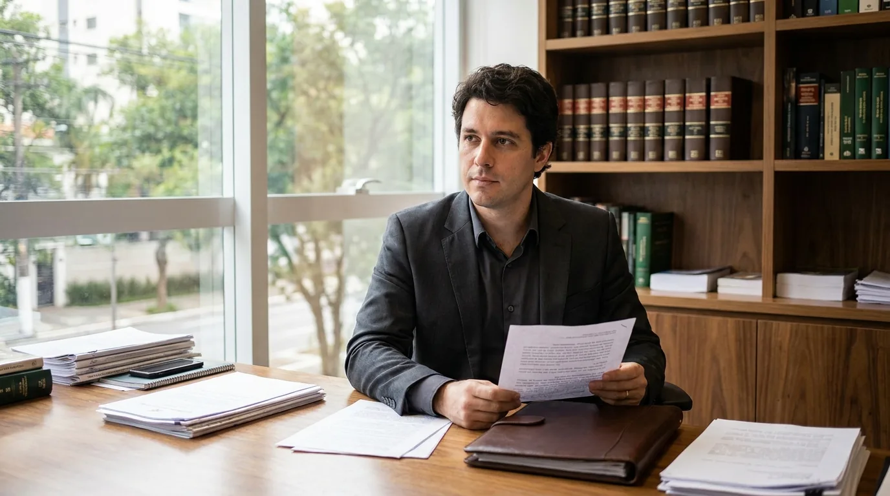

Licença e Cancelamento da OAB: Quando e Como Pedir

Aprovação num concurso que proíbe advogar, mandato eletivo, temporada fora do país, problema de saúde ou vontade de parar. Quando algo assim acontece, surge a dúvida: pedir a licença da OAB ou cancelar a inscrição de vez?
Entre a licença da OAB e o cancelamento, a decisão define se você continua pagando anuidade, se mantém o número de inscrição e quanto trabalho terá para voltar.
Este guia parte do Estatuto da Advocacia (Lei 8.906/1994). Primeiro vêm os arts. 11 e 12; depois, os casos em que a licença da OAB é obrigatória, o pedido, os efeitos e o retorno.
Licença da OAB e cancelamento: o que dizem os arts. 11 e 12 do Estatuto
A licença da OAB interrompe o exercício por um período; o cancelamento encerra a inscrição. Quem se licencia continua inscrito, mas sem poder advogar. Quem cancela deixa de ser advogado inscrito e, para voltar, faz um novo pedido de inscrição. Para uma visão geral da lei, veja o nosso guia do Estatuto da OAB.
As hipóteses de cancelamento da inscrição (art. 11)
O art. 11 lista cinco situações em que se cancela a inscrição do profissional:
- A pedido. O próprio advogado requer o cancelamento (inciso I);
- Penalidade de exclusão. A sanção disciplinar mais grave, aplicada em processo ético (inciso II);
- Falecimento. A inscrição se encerra com a morte do advogado (inciso III);
- Atividade incompatível em caráter definitivo. O advogado passa a exercer, de forma permanente, função que a lei declara incompatível com a advocacia (inciso IV);
- Perda de requisito da inscrição. O advogado deixa de cumprir alguma exigência do art. 8º, como a capacidade civil ou a idoneidade moral (inciso V).
Nas hipóteses de exclusão, falecimento e incompatibilidade definitiva, o § 1º manda o conselho promover o cancelamento de ofício ou a partir de comunicação de qualquer pessoa. Quem assume cargo incompatível e não avisa pode ter a inscrição cancelada.
As hipóteses de licença da OAB (art. 12)
O art. 12 é mais curto e prevê três casos de licenciamento:
- A pedido, por motivo justificado (inciso I). A lei não lista os motivos; quem avalia a justificativa é a seccional. Tratamento de saúde, temporada no exterior e dedicação temporária a outra atividade são pedidos comuns;
- Atividade incompatível em caráter temporário (inciso II). É o espelho do inciso IV do art. 11: se a incompatibilidade tem prazo para acabar, o caminho é a licença;
- Doença mental considerada curável (inciso III).
Quando o motivo é uma incompatibilidade, o que separa os dois artigos é a duração: temporária leva à licença, definitiva leva ao cancelamento.
Licença, cancelamento e suspensão lado a lado
Muita gente confunde a licença da OAB com a suspensão, que é pena disciplinar. A tabela resume as diferenças:
| Situação | Base no Estatuto | Quem dá início | Pode advogar? | Número de inscrição | Como volta |
|---|---|---|---|---|---|
| Licença da OAB | Art. 12 | O advogado, ou a incompatibilidade temporária | Não | Mantido | Pede o fim da licença quando cessar o motivo |
| Cancelamento a pedido | Art. 11, I | O advogado | Não | Perdido | Novo pedido de inscrição (art. 11, § 2º) |
| Cancelamento por incompatibilidade definitiva | Art. 11, IV | De ofício ou por comunicação | Não | Perdido | Novo pedido quando deixar a função incompatível |
| Exclusão | Arts. 11, II, e 38 | Processo disciplinar | Não | Perdido | Novo pedido com prova de reabilitação (art. 11, § 3º) |
| Suspensão disciplinar | Art. 37 | Processo disciplinar | Não, durante o prazo | Mantido | Cumpre o prazo: 30 dias a 12 meses, em regra; nos casos do art. 37, §§ 2º e 3º, até quitar ou provar nova habilitação |
Suspensão disciplinar não é licença da OAB
A suspensão está no art. 37 e é uma pena. Ela se aplica a infrações específicas do art. 34 e à reincidência, e interdita o exercício em todo o país. Pelo art. 38, três suspensões levam à exclusão, que cancela a inscrição.
A licença nasce de um pedido ou de uma nova função e não pune ninguém; a suspensão nasce de processo no Tribunal de Ética. O Código de Ética da OAB mostra as condutas que levam a esse processo.
Quando a licença da OAB ou o cancelamento são obrigatórios
Muitas vezes a licença da OAB não é escolha, e sim consequência de uma nova ocupação. O art. 27 do Estatuto separa duas figuras: a incompatibilidade, que proíbe totalmente a advocacia, e o impedimento, que a proíbe só em parte. Apenas a primeira força a licença ou o cancelamento.
Incompatibilidade com cargo público e outras funções (art. 28)
O art. 28 lista as atividades incompatíveis com a advocacia, mesmo em causa própria:
- chefe do Poder Executivo e membros da Mesa do Legislativo, com seus substitutos (inciso I);
- membros do Judiciário, do Ministério Público e dos tribunais de contas, e quem julga em órgãos colegiados da administração (inciso II);
- ocupantes de cargos ou funções de direção na administração pública direta ou indireta (inciso III);
- ocupantes de cargos vinculados ao Judiciário e de serviços notariais e de registro (inciso IV);
- ocupantes de cargo policial de qualquer natureza (inciso V) e militares da ativa (inciso VI);
- ocupantes de cargos que lançam, arrecadam ou fiscalizam tributos (inciso VII);
- ocupantes de direção e gerência de instituições financeiras, inclusive privadas (inciso VIII).
O caso mais comum é o do advogado aprovado em concurso para analista de tribunal, escrivão de polícia ou auditor fiscal. Ao tomar posse, ele passa a exercer função incompatível. Como cargo efetivo costuma ser tratado como definitivo, o caminho em regra é o cancelamento; se a seccional entender que a incompatibilidade é temporária, é a licença.
O § 2º tira do inciso III quem não tem poder de decisão relevante, a juízo do conselho. Já o § 3º, incluído pela Lei 14.365/2022, chegou a permitir que policiais e militares da ativa advogassem em causa própria com inscrição especial. O STF, porém, declarou esse parágrafo e o § 4º inconstitucionais na ADI 7227, julgada em 2023. A incompatibilidade dos incisos V e VI vale por inteiro, inclusive em causa própria.
Atenção: o § 1º do art. 28 diz que a incompatibilidade permanece mesmo que o ocupante deixe de exercer o cargo temporariamente. O servidor em licença do próprio cargo, em férias ou afastado continua incompatível. Quem resolve advogar nas férias do tribunal pratica atos nulos.
Impedimento não exige licença da OAB (art. 30)
O art. 30 trata do impedimento. Ele proíbe o servidor público de advogar contra a Fazenda Pública que o remunera. Também impede os parlamentares de advogar a favor de pessoas jurídicas de direito público, empresas públicas, sociedades de economia mista e concessionárias, ou contra elas.
Nesses casos, o profissional segue advogando em tudo o que fica fora do impedimento. Um servidor municipal pode atuar em causas trabalhistas privadas, mas não contra o município que paga o seu salário.
Temporário ou definitivo: como enquadrar o cargo
Mandato eletivo e cargo em comissão têm prazo ou podem acabar a qualquer momento e costumam levar à licença. Cargo efetivo de concurso tende a ser tratado como definitivo, com cancelamento. O enquadramento final é da seccional.
| Situação na vida real | Dispositivo | Caminho provável |
|---|---|---|
| Eleito prefeito ou vice | Art. 28, I | Licença da OAB durante o mandato |
| Nomeado diretor de autarquia (cargo em comissão) | Art. 28, III | Licença, salvo se não houver poder de decisão relevante (§ 2º) |
| Posse como analista de tribunal (cargo efetivo) | Art. 28, IV | Cancelamento, em regra; confirme o enquadramento na seccional |
| Posse como policial ou militar da ativa | Art. 28, V e VI | Cancelamento se o cargo for efetivo, licença se o vínculo for temporário; nem em causa própria (ADI 7227) |
| Servidor municipal sem função de direção | Art. 30, I | Sem licença: advoga, exceto contra a Fazenda que o remunera |
| Eleito vereador | Art. 30, II | Sem licença: impedimento parcial (se entrar na Mesa da Câmara, vira incompatibilidade do art. 28, I) |
| Mudança para o exterior ou pausa na carreira | Art. 12, I, ou art. 11, I | Licença a pedido ou cancelamento a pedido, conforme o plano de volta |
Se a licença da OAB faz parte de uma pausa planejada, o retorno se prepara antes da saída. Organize a passagem dos clientes e deixe a estrutura do escritório pronta para ser retomada. A JuriDigital ajuda escritórios a planejar a presença digital de forma ética, dentro das regras da OAB.
Como pedir a licença da OAB ou o cancelamento da inscrição
O pedido é feito no Conselho Seccional da sua inscrição principal. A maior parte das seccionais recebe o requerimento pelo portal de serviços, e algumas ainda pedem protocolo presencial. Antes do formulário, porém, resolva a situação dos clientes.
Antes do pedido: clientes, processos e sociedade
Pelo parágrafo único do art. 4º, são nulos os atos praticados por advogado licenciado ou que passou a exercer atividade incompatível. Então, antes de a licença valer, cada processo em andamento precisa de um destino.
São dois caminhos. O primeiro é substabelecer os poderes sem reserva a um colega de confiança, com o prévio e inequívoco conhecimento do cliente (art. 26, § 1º, do Código de Ética). O nosso guia de substabelecimento mostra como fazer. O segundo é renunciar ao mandato. Nesse caso, o art. 5º, § 3º, obriga você a seguir representando o cliente pelos dez dias seguintes à notificação, salvo se ele for substituído antes.
Para quem é sócio, há regra própria. O art. 16, § 2º, diz que o impedimento ou a incompatibilidade temporária não exclui o advogado da sociedade, mas deve ser averbado no registro dela. E proíbe explorar o nome e a imagem do licenciado em favor do escritório. Na prática, o seu nome sai do material de divulgação.
Na prática: faça uma planilha com todos os processos ativos, o cliente, a fase e o destino de cada um (substabelecimento ou renúncia). Comunique os clientes por escrito e guarde as confirmações. Só depois protocole o pedido. Essa ordem evita prazo perdido e reclamação no Tribunal de Ética.
O requerimento e os documentos
Cada seccional tem o seu formulário, mas o pedido de licença da OAB costuma trazer os mesmos dados: identificação, número de inscrição, tipo de pedido e motivo. Na licença a pedido, o motivo é obrigatório, porque o art. 12, I, exige justificativa. Na licença por incompatibilidade, anexe a prova da nova função, como o ato de posse ou a nomeação publicada.
Em geral, as seccionais também pedem a devolução da carteira e do cartão profissional, ou uma declaração de extravio. Esses procedimentos de secretaria são definidos por cada Conselho Seccional; o Regulamento Geral não traz um formulário nacional.
E os débitos de anuidade?
Cada Conselho Seccional fixa as anuidades e suas regras, como prevê o art. 55 do Regulamento Geral. Por isso, o tratamento dos débitos no pedido varia: algumas seccionais pedem quitação ou parcelamento antes de deferir, outras deferem e mantêm a cobrança. Consulte a sua.
O que não varia é que a dívida anterior continua existindo. O art. 46, parágrafo único, do Estatuto dá à certidão do conselho força de título executivo extrajudicial. Cancelar a inscrição encerra as anuidades futuras, mas não apaga as vencidas. O guia da anuidade da OAB detalha valores, descontos e parcelamento.
A dívida também não tira a sua carteira. O texto do Estatuto ainda traz a suspensão para quem não paga as contribuições depois de notificado (art. 34, XXIII, com o art. 37, § 2º), mas o STF derrubou esse caminho. No Tema 732 da repercussão geral (RE 647.885), fixou que a suspensão por inadimplência de anuidade é sanção política inconstitucional, ou seja, uma forma indireta de forçar o pagamento proibindo a pessoa de trabalhar. Na ADI 7020, declarou inconstitucional o próprio inciso XXIII como infração disciplinar. Quem está devendo, portanto, não precisa se licenciar por causa do débito.
Muitos advogados pensam na licença da OAB porque a advocacia não está pagando as contas, e não por uma incompatibilidade. Se esse é o seu caso, olhe antes para a forma de atrair clientes. Uma conversa com um especialista da JuriDigital ajuda a entender se o gargalo está no posicionamento, no site ou na presença digital do escritório.
Efeitos da licença da OAB e do cancelamento na prática
A escolha entre licença da OAB e cancelamento pesa em três pontos: o que você pode fazer, o que paga e o que acontece com o número.
O que muda durante a licença da OAB
O licenciado continua inscrito e mantém o número. Em compensação, não pratica atos privativos de advogado: petições, audiências, consultoria jurídica. Se praticar, os atos são nulos e ele pode responder disciplinarmente.
Sobre a anuidade durante a licença, a regra é da seccional. Há conselhos que isentam o licenciado, às vezes mediante pedido expresso, e há conselhos que cobram. Peça a informação por escrito ao protocolar.
O que muda com o cancelamento da inscrição
O cancelamento encerra a inscrição. O profissional volta à condição de bacharel em Direito e não pode se apresentar como advogado nem oferecer serviços jurídicos. As anuidades param de correr, e o cadastro registra o cancelamento (art. 24, § 2º, do Regulamento Geral), que qualquer pessoa confere no Cadastro Nacional dos Advogados.
O ponto sensível é o número. O art. 11, § 2º, diz que o novo pedido de inscrição não restaura o número anterior.
Voltar à advocacia depois da licença da OAB ou do cancelamento
O Estatuto trata as duas voltas de forma diferente. Sair da licença é mais simples. Voltar depois do cancelamento exige novo pedido de inscrição, mas sem refazer o Exame de Ordem.
O fim da licença da OAB
Quando o motivo termina, o advogado pede à seccional o retorno. Na incompatibilidade temporária, a prova costuma ser a exoneração, o fim do mandato ou o desligamento da função. O número continua o mesmo, e a anuidade volta ao valor normal onde a seccional isentava o licenciado.
Nova inscrição depois do cancelamento: precisa de novo Exame de Ordem?
Não. O art. 11, § 2º, manda provar só os requisitos dos incisos I, V, VI e VII do art. 8º: capacidade civil, não exercer atividade incompatível, idoneidade moral e compromisso perante o conselho. O Exame de Ordem (inciso IV) e o diploma (inciso II) ficam fora da lista.
A exceção é o cancelamento por exclusão: aí o § 3º exige provas de reabilitação. O roteiro é parecido com o da primeira vez, e o guia de inscrição na OAB mostra o passo a passo.
Dica: se você planeja voltar em poucos anos, compare a licença da OAB com o cancelamento seguido de nova inscrição. Some as anuidades (se a seccional cobrar do licenciado) e as taxas da nova inscrição, e pese quanto o número atual conta na sua reputação.
Reconstruir a carteira depois da pausa
Depois do fim da licença da OAB ou da nova inscrição, falta voltar a ter clientes. Quem passou anos num cargo público ou fora do país volta com a rede de contatos desatualizada e, muitas vezes, sem presença no Google.
Comece pela estrutura: atuar sozinho, em sociedade ou como associado, tema do guia sobre como abrir um escritório de advocacia. Para o preço, confira a tabela de honorários da OAB da sua seccional e, para calibrar a expectativa de renda, o levantamento de quanto ganha um advogado. Por fim, cuide da demanda: site, perfil no Google e conteúdo que mostrem que você voltou, sempre dentro do Provimento 205/2021.
Antes de decidir entre licença e cancelamento
A licença da OAB e o cancelamento definem o que você pode fazer durante a pausa e o esforço para voltar. Leia os arts. 11 e 12 com o seu caso na mão, resolva a situação dos clientes e pergunte à seccional o que ela cobra. Na hora de reabrir as portas, a JuriDigital pode ajudar o seu escritório a voltar a ser encontrado por quem procura um advogado.
Perguntas frequentes sobre licença da OAB
Qual a diferença entre licença e cancelamento da OAB?
A licença da OAB interrompe o exercício por um período e mantém a inscrição e o número. O cancelamento encerra a inscrição; para voltar, é preciso novo pedido, com número novo. Nos dois casos, não se praticam atos de advogado: na licença, até ela terminar; no cancelamento, até nova inscrição.
Quem passa em concurso público precisa cancelar a OAB?
Depende do cargo. Se ele estiver no art. 28 do Estatuto, é preciso regularizar: licença da OAB quando a função é temporária, cancelamento quando é definitiva. Se o cargo gera só impedimento (art. 30), o servidor segue advogando, exceto contra a Fazenda que o remunera.
O advogado com licença da OAB paga anuidade?
Depende da seccional. Há conselhos que isentam o licenciado e outros que cobram. Peça a informação por escrito ao protocolar o pedido de licença.
Depois de cancelar a inscrição, preciso fazer o Exame de Ordem de novo?
Não. Pelo art. 11, § 2º, o novo pedido exige prova de capacidade civil, de não exercer atividade incompatível, de idoneidade moral e o compromisso perante o conselho. Quem foi excluído também precisa provar reabilitação.
A OAB pode suspender quem está devendo anuidade?
Não. O STF, no Tema 732 (RE 647.885) e na ADI 7020, afastou a suspensão do exercício profissional por inadimplência. A OAB cobra a dívida por protesto e execução.